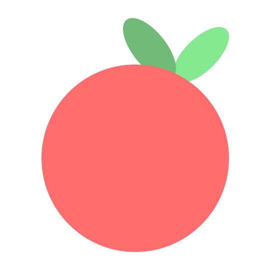
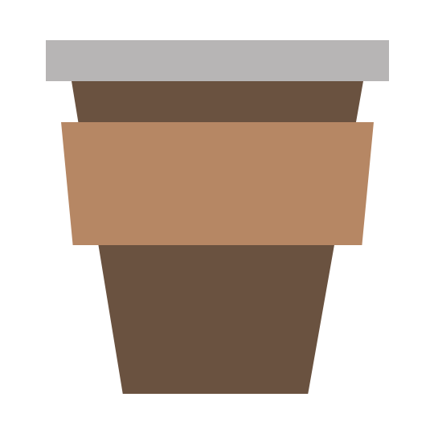
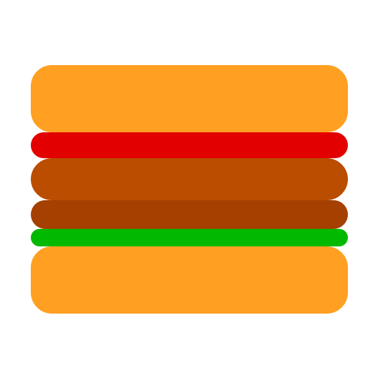

Distraction Log
Did you break your focus?
What are you working on?
Working on something else?
The Pomodoro Method

Pomodoro
Once a pomodoro starts, it's go time! This period is for uninterrupted, distraction-free work.

Short Break
After a pomodoro ends, it's time to treat yourself to a quick mental break. Relax and unwind before the next pomodoro.

Long Break
Every few pomodoros, you deserve to relax for a bit longer. Take this time to step away from your work.
Distractions
Distractions are a natural pat of working, but studies show it can take up to 15 minutes to regain focus after being distracted! So it's important to be mindful by keeping track of what's pulling you away from your work. Use the distraction log to write down distractions as they come up.